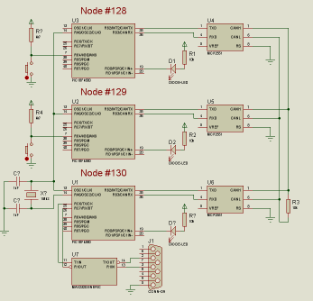
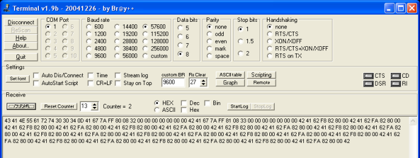

Chapter 2
J1939.c CAN Bus plus RS232 (continued)
<<back to main page| Abstract
of
the preceding
chapter: Microchip provided source code  for J1939.c
CAN library for J1939.c
CAN library  (Kim
Otten et al.), plus Application Maestro generated
code UARTIntC.c, were used to implement a bare-bones system
with a 2-node CAN bus, where node #129 upon receiving commands from
#128
to toggle a LED also output strings "ON" and "OFF" thru the RSR23. (Kim
Otten et al.), plus Application Maestro generated
code UARTIntC.c, were used to implement a bare-bones system
with a 2-node CAN bus, where node #129 upon receiving commands from
#128
to toggle a LED also output strings "ON" and "OFF" thru the RSR23. |
Now we become more ambitious: we want to spy the CAN bus traffic and log it to our PC's screen so that we can leisurely study it (we like things that difficult:=).
After much head scratching, we hit upon this: let us keep the 2 nodes #128 and #129 exchanging messages, and add a 3rd node, #130, listening to them, and reporting to the PC.


J1939.c - what to change
What CAN J1939 messages are our simple 2 nodes sending each other?And how do they map into the PIC18F4580 receiver buffers?
To have a look into it, in a sort of reverse engineering and hacking mood (yes, we could had just studied the j1939.c sources...) we grafted our crafty UART calls into 4 places of the function
J1939_ReceiveMessages in
our third node, #130, resulting in a slightly modified firmware: static void
J1939_ReceiveMessages( void
)
{
...
... graft 1: send char "A"
to signal a buffer dump starts
#if 1
//
beg-bracket the message inserted by us
UARTIntPutChar('A');
#endif
...
... graft 2: send every CAN
received byte to UARTIntPutChar (head):
#if 1
//
copy RxBuffers to UART
UARTIntPutChar(OneMessage.Array[Loop]);
#endif
... graft
4: send every CAN
received byte to UARTIntPutChar (data):
#if 1
//
copy RxBuffers to UART
UARTIntPutChar(OneMessage.Data[Loop]);
#endif
... graft 3: send
char "B"
to signal the
buffer dumps ends
#if 1
//
end-bracket the message inserted by us
UARTIntPutChar('B');
#endif
...
}
The other 2 nodes are
much as before, but now we
added a second switch
to #128 pin RB6, which sends LED ON/OFF commands to our new #130.You can download the 3 projects files, one for each node, from here:
download CAN-UART project (#130)
download CAN-only project (#128)
download CAN-only project (#129)
Now everything addressed to our smart node #130 is send to our PC's Terminal program, as the middle 2 calls dump the affected RxBuffers to the UART.
Capturing and analyzing CAN bus messages
Next we had the thing running, switching #128 pin RB4 to Vcc and GND (our makeshift switch), thereby sending LED ON/OFF commands to our #130 "spy", and this is what we get into Terminal (as before, I used as terminal the excelent Terminal v1.9b provided by Bray++ configured to 57600 baud and Hex display (see figure):
After copy & paste we have this (for clarity's sake, ASCII and hex are mixed, and the adornments generated by ourselves are in green).
This is going to be boring!
| Our current
design
has a serious flaw: our spy
has its filters set to its
own address, and so it "sees" only messages sent to him
specifically (or to the global address). Later on we will fix that, by now we live happily with this limitation. |
"CANUart004"
our
"I'm
alive" string we send at powerup"A"
67 7A FF 80
08 32 00 00 00 00 00 00 00 "B" can
address negotiation (from node #128)"A" 67
7A FF 81 08 33 00 00 00 00 00 00 00 "B"
idem (from node #129)"A" 62
FA 82 80 00 "B"
toggle LED command"A" 62
F8 82 80 00 "B""A" 62
FA 82 80 00 "B"...
etc.The string
"CANUart004"
is generated by us at startup, to be sure that the UART is OK, and
really has nothing to do with the CAN bus.Now let also peruse J9139-xx definitions:
| SAE
J1939-81 4.1.2 Addresses An address is a one-byte value identifying a particular CA in a network. The address of a CA is incorporated into the identifier of every message sent by that CA and is used to provide uniqueness to messages that are sent by the CA.occur. Each ECU must be capable of announcing which address(es) it intends to use. SAE J1939-21 The Address Claim PGN is sent to the global destination address even though the request for it may have been to a specific destination address (see J1939-81). |
| 3.1.3
Addresses and NAME (J1939/81 and Appendix B) Each ECU on the network will have at least one name and one address associated with it. (...) The address of an ECU defines a specific communications source or destination for messages, the name includes identification of the primary function performed at that address and adds an indication of the instance of that functionality in the event that multiple ECUs with the same primary function coexist on the same network. As many as 254 different ECUs of the same function can coexist on the network, each identified by their own address and name. To uniquely name each ECU, J1939 defines a 64 bit NAME consisting of the fields shown in Table 1.(...) In general, most ECUs will use their Preferred Addresses immediately upon power up. A specific procedure (defined in J1939/81 and elaborated on in J1939/01) for assigning addresses after powerup is used to resolve any conflicts that may occur. Each ECU must be capable of announcing which address(es) it intends to use. |
Back to our first 2 captured strings (leaving out "A" and "B" brackets generated by us):
67 7A FF 80
08 32 00 00 00 00 00 00 00
can
address negotiation (from node #128)67
7A FF 81 08 33 00 00 00 00 00 00 00
idem (from node #129)According to the PIC18F2480/2580/4480/4580 data book, page 290, the first 5 RX buffers are:
RXBnSIDH: RECEIVE
BUFFER n STANDARD IDENTIFIER REGISTERS, High Byte
SID10 SID9 SID8 SID7 SID6 SID5 SID4 SID3 (Standard Identifier bits)
RXBnSIDL: RECEIVE BUFFER n STANDARD IDENTIFIER REGISTERS, LOW BYTE
SID2 SID1 SID0 SRR EXID — EID17 EID16 (Standard Identifier bits + Extended Identifier bits)
RXBnEIDH: RECEIVE BUFFER n EXTENDED IDENTIFIER REGISTERS, HIGH BYTE
EID15 EID14 EID13 EID12 EID11 EID10 EID9 EID8 (Extended Identifier bits)
RXBnEIDL: RECEIVE BUFFER n EXTENDED IDENTIFIER REGISTERS, LOW BYTE
EID7 EID6 EID5 EID4 EID3 EID2 EID1 EID0 (Extended Identifier bits)
RXBnDLC: RECEIVE BUFFER n DATA LENGTH CODE REGISTERS [0 ≤ n ≤ 1]
— RXRTR RB1 RB0 DLC3 DLC2 DLC1 DLC0 (Data Length Code bits)
SID10 SID9 SID8 SID7 SID6 SID5 SID4 SID3 (Standard Identifier bits)
RXBnSIDL: RECEIVE BUFFER n STANDARD IDENTIFIER REGISTERS, LOW BYTE
SID2 SID1 SID0 SRR EXID — EID17 EID16 (Standard Identifier bits + Extended Identifier bits)
RXBnEIDH: RECEIVE BUFFER n EXTENDED IDENTIFIER REGISTERS, HIGH BYTE
EID15 EID14 EID13 EID12 EID11 EID10 EID9 EID8 (Extended Identifier bits)
RXBnEIDL: RECEIVE BUFFER n EXTENDED IDENTIFIER REGISTERS, LOW BYTE
EID7 EID6 EID5 EID4 EID3 EID2 EID1 EID0 (Extended Identifier bits)
RXBnDLC: RECEIVE BUFFER n DATA LENGTH CODE REGISTERS [0 ≤ n ≤ 1]
— RXRTR RB1 RB0 DLC3 DLC2 DLC1 DLC0 (Data Length Code bits)
Converting the first 5 received bytes (#define J1939_MSG_LENGTH 5) to bits, and using the same color schema as above::
0110 0111 0111 1010
1111 1111 1000 0000 0000 1000
More stuff from J1939-81:
(SAE
J1939-81 4.2.2.1 Address Claimed Message) |
011 0 0 111 0111 1010 1111 1111 1000 0000 0000 1000
R DP
Every field described in J1939-xx above is to be found here:
- The leftmost 3 bits 011 are the message priority P
- Next, R and DP (Data page) bits are both 0
- Next we have 1110 1111010 = 0xEE = 238 (PF, Address Claimed Message PDU Format), where the three striken bits are SRR EXID — bits that are poked into RXBnEIDH (see above) by the PIC18F4580's CAN module hardware.
- Next we have 0xFF (PS PDU specific: 255 (global address))
- And then 0x80
= #128 which is the SA Source
Address
(in the second message, 0x81 = #129) - Lastly, the Data Length: 08 = 8 bytes
You will find all
this defined in the
source files:
#define J1939_CONTROL_PRIORITY 0x03
#define J1939_STARTING_ADDRESS 128 (0x80 = 128)
#define J1939_STARTING_ADDRESS 129 (0x81 = 129)
#define J1939_GLOBAL_ADDRESS 255 (0xFF)
etc.
#define J1939_CONTROL_PRIORITY 0x03
#define J1939_STARTING_ADDRESS 128 (0x80 = 128)
#define J1939_STARTING_ADDRESS 129 (0x81 = 129)
#define J1939_GLOBAL_ADDRESS 255 (0xFF)
etc.
The "toggle LED command" follow the same pattern:
62
FA 82 80 00
toggle OFF LED command62
F8 82 80 00
toggle ON LED command011 0 0 010 1111
1010
1000 0010 1000
0000 0000 0000
R DP
R DP
- The leftmost 3 bits 011 are the message priority P
- Next, R and DP (Data page) bits are both 0
- Next
we have 0101 1111010 = 0x5E =
94 (PF,
"toggle OFF" PDU Format), where the three striken bits are SRR
EXID — bits that are poked into RXBnEIDH (see above)
by the PIC18F4580's CAN module hardware.
(the second message PDU Format = 0x5C = 92 is the "toggle ON") - Next we have 0x82 (PS PDU specific: #130, our spy address)
- And then 0x80
= #128 which is the SA Source
Address, the node that sent the command
- Lastly, the Data Length: 00 = 0 bytes, as nothing more is needed
You will find all
this defined in the
source files:
#define TURN_ON_LED 92
#define TURN_OFF_LED 94
#define J1939_STARTING_ADDRESS 130
#define TURN_ON_LED 92
#define TURN_OFF_LED 94
#define J1939_STARTING_ADDRESS 130
What is next?
As we said, our toy spy is just paying attention to messages addressed to himself.Nothing that changing to "listening only" mode will not cure - that we leave to the next chapter.
And thats all, folks.
Please let me know of any broken links, missing parts etc. you may find here.
Next issue will be more sophisticated - I hope!.
Quoted documents:
Microchip source code
for J1939.c
CAN library (Kim
Otten et al.)Application Maestro generated code UARTIntC.c
SAE J1939 Revised AUG2003
SAE J1939-21
SAE J1939-81
<<back to main page
©Rec (recursos.pt@gmail.com)
06-02-21